目次
カンペうちわの作り方
＜用意するもの＞
-使うアプリ-
・ibisPaint X：ダウンロードはこちらから
・かんたんnetprint：ダウンロードはこちらから
-材料-
・ジャンボうちわ：ダイソーやセリアなどの百円均一に売っているもの
・A3の厚紙：好きな色の厚紙
-その他-
・はさみ、カッター
・のり
＜手順①＞
1.次の画像をダウンロードする：
2.ibisPaint Xを開きマイギャラリーをタップ すると下のような画面が表示されます
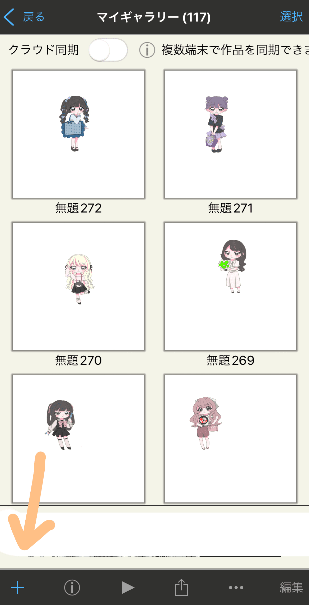
3.左下の ＋ ボタンをタップ
4.3307×2339に合わせてOKのボタンをタップ
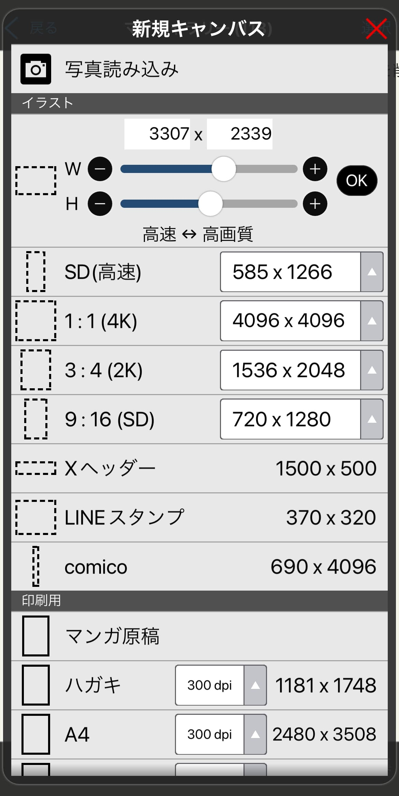
5.次のような画面になるため、下の１と紙が重なったようなアイコンをタップ
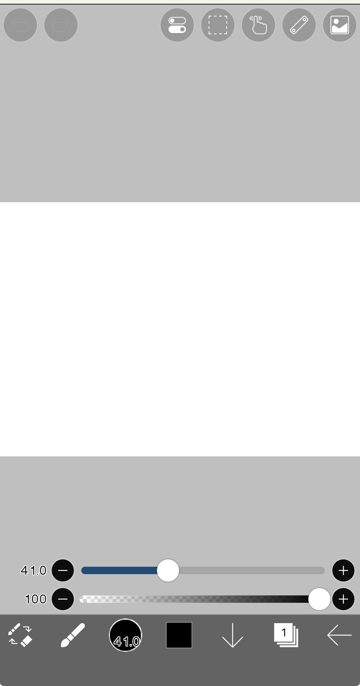
6.カメラアイコンをタップして、1でダウンロードしたうちわのもととなる画像を開く
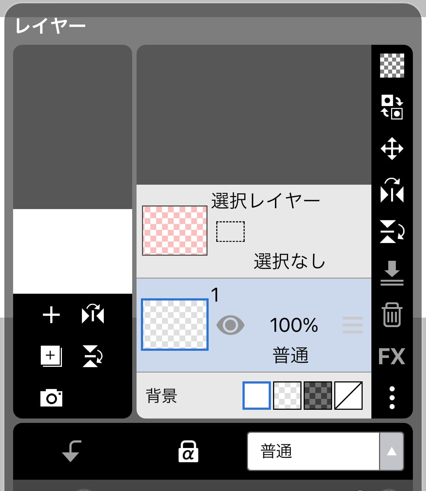
7.画像と白いキャンパスが同じ大きさになるように調節する
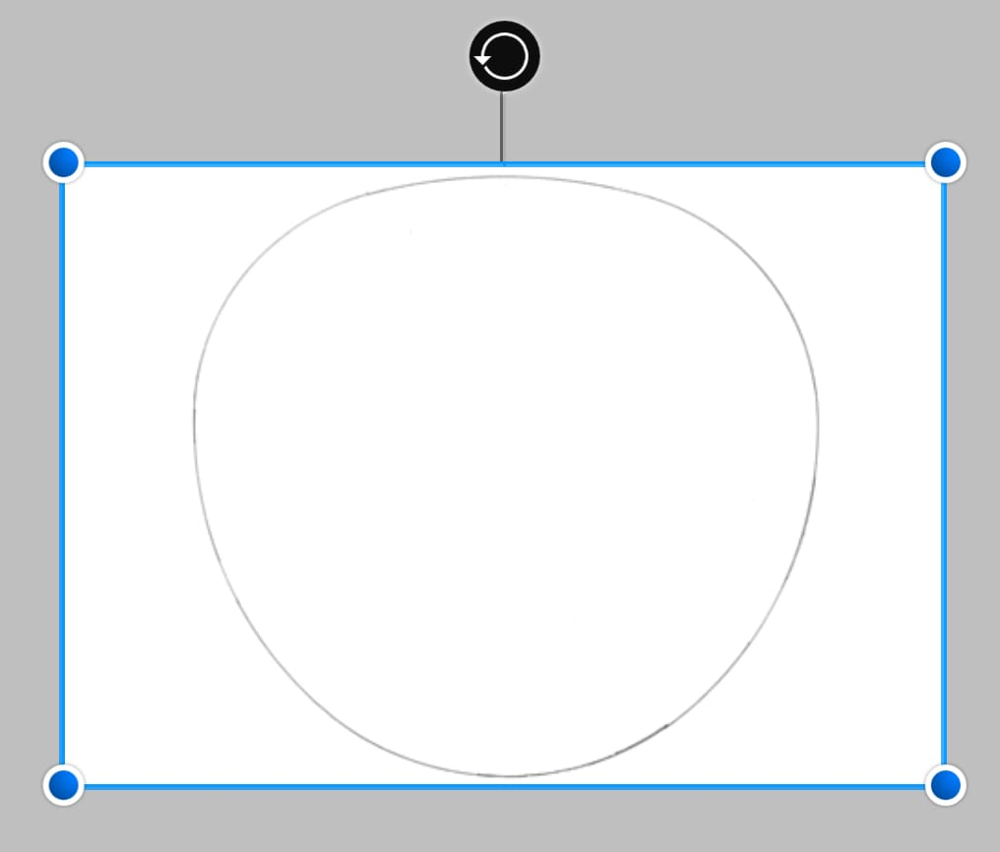
8.緑色のチェックマークを押す
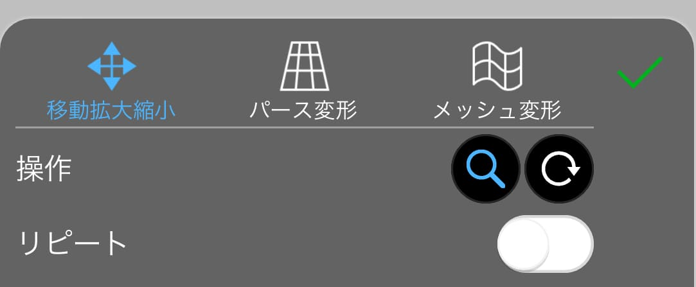
♡手順①完了！♡

＜手順②＞
文字を入れる（複雑な操作が多いため、動画を見て参考にしてください）
※このときの注意点※
同じレイヤー内で作業すること、または違うレイヤーで作業した場合はそれらを最後に結合する
《おすすめのフォント》
・にくまるフォント（動画内ではこちらを使用）
・はらませにゃんこ
・チェックポイントフォント
・けいふぉんと
・あおぞら明朝 Black
♡手順②完了！♡
＜手順③＞
イラストをつける・ラスタライズし、さらに文字をふちどる
※このときの注意点※
ラスタライズすると文字を編集できなくなるので、間違いがないか確認する
♡手順③完了！♡
＜手順④＞
最終調節・画像を保存する
♡手順④完了！♡
＜手順⑤＞
1.かんたんnetprintを開く
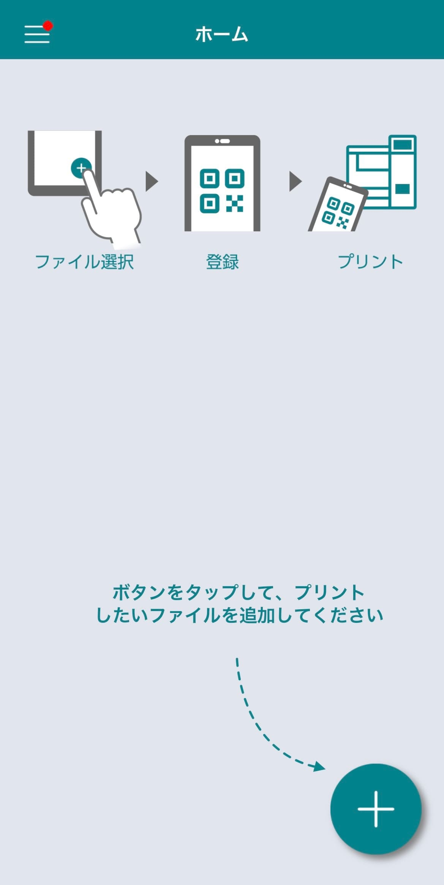
2.右下の＋をタップして写真を選ぶを押して、手順④を選択する
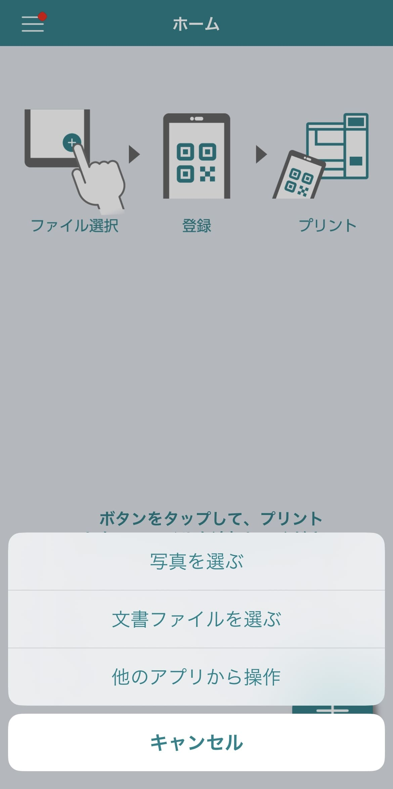
3.用紙サイズを”普通紙 A3”にして登録する
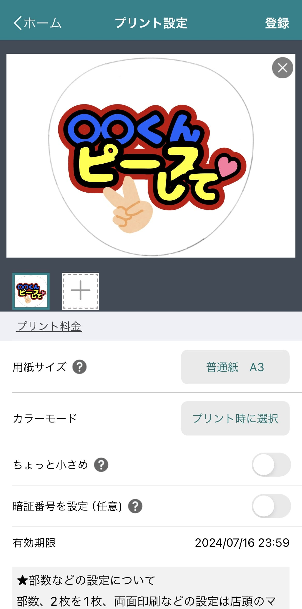
4.プリント予約番号を確認できたらセブンイレブンでカラーモードを選択し、印刷する
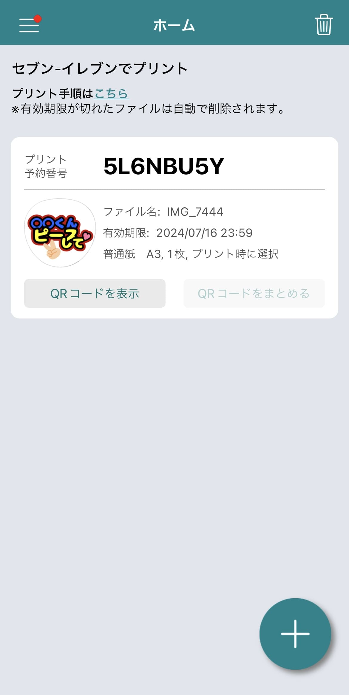
♡手順⑤完了！♡
＜手順⑥＞
1.印刷した紙をはさみやカッターを使用し、ふちどりに沿って切る
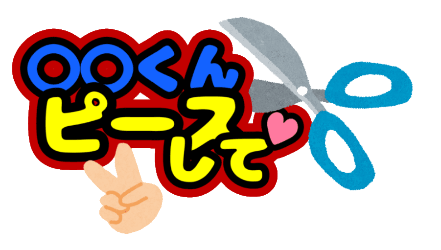
2.好きな色のA3の厚紙をうちわに合わせて切る
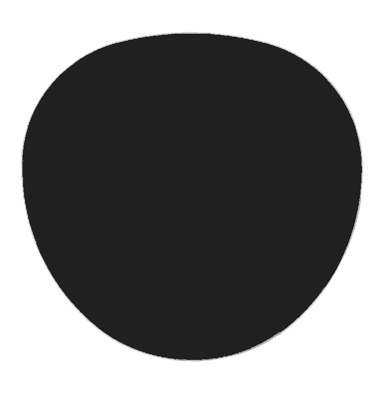
3.切ったものを貼り付け、用意したうちわに貼り付ける
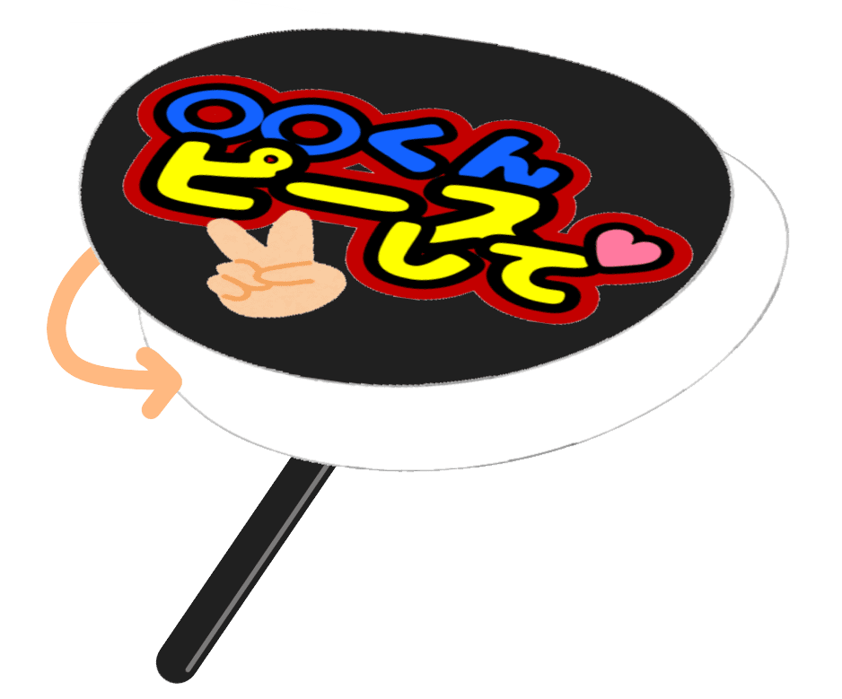